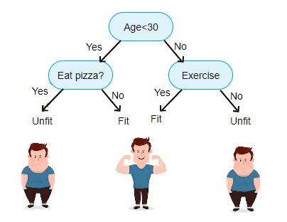

Árboles de decisión#
Los árboles de decisión son una poderosa herramienta en el arsenal del aprendizaje automático, ofreciendo una metodología visual e intuitiva para la toma de decisiones basada en datos. En esencia, estos modelos representan estructuras jerárquicas de decisiones, donde cada nodo interno representa una pregunta o condición sobre las variables de entrada, y las ramas y hojas conducen a las posibles respuestas o resultados. Esta representación gráfica facilita la interpretación y comprensión de cómo el modelo toma decisiones, convirtiendo a los árboles de decisión en una herramienta valiosa tanto para expertos como para aquellos nuevos en el campo del aprendizaje automático.
La flexibilidad de los árboles de decisión los hace idóneos para una variedad de tareas, desde la clasificación hasta la regresión. Su capacidad para manejar relaciones no lineales y la interacción entre múltiples características hace que sean particularmente eficaces en conjuntos de datos complejos y heterogéneos. Además, los árboles de decisión pueden gestionar tanto variables numéricas como categóricas, lo que amplía su aplicabilidad en una amplia gama de dominios y problemas.
Una característica distintiva de los árboles de decisión es su capacidad para realizar divisiones recursivas basadas en la importancia de las características, contribuyendo así a la eficiencia en la selección de características relevantes. Esta característica se traduce en modelos simplificados y más interpretables, además de ayudar a mitigar el sobreajuste, un problema común en el aprendizaje automático. A medida que avanzamos en esta exploración de los árboles de decisión, examinaremos en detalle sus aplicaciones, ventajas y desafíos, destacando su papel fundamental en la construcción de modelos predictivos y en la toma de decisiones basada en datos.
Árboles de decisión en problemas de regresión#
El objetivo de un árbol de decisión en la regresión es modelar la relación entre un conjunto de variables predictoras y una variable de respuesta continua. A diferencia de la regresión lineal, que asume una relación lineal entre las variables, un árbol de decisión busca capturar patrones más complejos y no lineales en los datos. La estructura de árbol se construye de manera jerárquica, dividiendo el conjunto de datos en subconjuntos cada vez más homogéneos en términos de la variable de respuesta.
El proceso de construcción del árbol implica seleccionar de manera óptima las variables predictoras y los puntos de corte (umbrales) que dividen el conjunto de datos en subgrupos que minimizan la variabilidad de la variable de respuesta dentro de cada subgrupo. Esto se realiza de manera recursiva hasta que se alcanza un criterio de parada, como un tamaño mínimo de nodo o una profundidad máxima del árbol.

Una vez construido el árbol, se utiliza para hacer predicciones asignando a cada observación el valor medio de la variable de respuesta en el subconjunto correspondiente del árbol. El árbol de decisión busca, por lo tanto, proporcionar una representación estructurada de cómo las variables predictoras están relacionadas con la variable de respuesta, permitiendo la identificación de patrones no lineales y no monótonos en los datos.
En resumen, el objetivo central de un árbol de decisión en la regresión es ofrecer un modelo flexible y interpretable que pueda adaptarse a relaciones no lineales en los datos, dividiendo el espacio de características de manera óptima para predecir la variable de respuesta continua.
Nota
Llegados a este punto, vamos a utilizar unas funciones para no repetir tanto código. Estas se pueden visualizar en los anexos.
Entrenar y visualizar árboles de decisión#
Vamos a ver como entrenar un árbol de decisión para nuestro problema de los seguros:
from regression import calculate_error, get_train_test_validation
from sklearn.tree import DecisionTreeRegressor
X_train, X_test, X_val, y_train, y_test, y_val = get_train_test_validation()
reg = DecisionTreeRegressor()
reg.fit(X_train, y_train)
y_pred = reg.predict(X_val)
calculate_error(y_val, y_pred)
---------------------------------------------------------------------------
UnboundLocalError Traceback (most recent call last)
Cell In[2], line 4
1 from regression import calculate_error, get_train_test_validation
2 from sklearn.tree import DecisionTreeRegressor
----> 4 X_train, X_test, X_val, y_train, y_test, y_val = get_train_test_validation()
6 reg = DecisionTreeRegressor()
7 reg.fit(X_train, y_train)
File /mnt/Datos/proyectos/Especialidad BigDataIA/repositorios/sistemas_aprendizaje_automatico/apuntes_web/markdowns/sistemas_supervisados/regresion/modelos/../../../../code/regression.py:35, in get_train_test_validation(path)
33 def get_train_test_validation(path=None):
---> 35 X, y = get_X_y(path)
37 X_train, X_test, y_train, y_test = train_test_split(X, y, test_size=0.2, random_state=1)
38 X_train, X_val, y_train, y_val = train_test_split(X_train, y_train, test_size=0.25, random_state=1)
File /mnt/Datos/proyectos/Especialidad BigDataIA/repositorios/sistemas_aprendizaje_automatico/apuntes_web/markdowns/sistemas_supervisados/regresion/modelos/../../../../code/regression.py:15, in get_X_y(path)
13 if path:
14 PATH_TO_CSV = path
---> 15 df = pd.read_csv(PATH_TO_CSV + 'insurance_preprocesed.csv')
16 df = df.drop(['No'], axis=1)
17 X = df.copy().drop(['charges'], axis=1)
UnboundLocalError: cannot access local variable 'PATH_TO_CSV' where it is not associated with a value
El código anterior simplemente crea un árbol de decisión para un problema de regresión y lo entrena. Posteriormente utiliza los datos de validación para medir el error obtenido. Posteriormente, podemos visualizar como ha clasificado los datos de nuestro problema:
from sklearn import tree
import os
from graphviz import Source
tree.export_graphviz(
reg,
out_file=os.path.join("./img", "regression_tree.dot"),
feature_names=X.columns,
rounded=True,
filled=True
)
Source.from_file('./img/regression_tree.dot')
Llegado a este punto, vamos a comparar los resultados obtenidos con la regresión lineal y con los árboles de decisión:
| MÉTRICAS DE EVALUACIÓN DE LOS MODELOS DE REGRESIÓN | |||
|---|---|---|---|
| MÉTRICA | RÉGRESIÓN LINEAL | ÁRBOLES DE DECISIÓN | |
| RMSE | 6427.98 | 8050.03 | |
| R² | 0.7 | 0.53 | |
| MAPE | 0.51 | 0.39 | |
Parece ser que no hemos mejorado mucho en nuestro modelo, ¿Como puede ser? Hay que tener en cuenta que los árboles de decisión son uno de los mejores algoritmos de aprendizaje automático, así que algo falla.
Si miramos la implementación de nuestro árbol de decisión, vemos qeu simplemente lo hemos inicializado, pero no hemos configurado ninguno de sus múltiplos parámetros o hiperparámetros. Pero, ¿que es un hiperparámetro?
reg = DecisionTreeRegressor(random_state=0)
Hiperparámetros#
Los hiperparámetros son parámetros externos al modelo que no se aprenden directamente durante el proceso de entrenamiento, sino que se establecen antes de iniciar dicho proceso. Los hiperparámetros influyen en la arquitectura y en el comportamiento del modelo, y su ajuste correcto puede ser crucial para lograr un rendimiento óptimo.
Diferenciándolos de los parámetros del modelo, que son los valores internos que se ajustan durante el entrenamiento para minimizar una función de pérdida, los hiperparámetros son decisiones que toma el diseñador o el ingeniero de machine learning antes de iniciar el proceso de entrenamiento. La elección adecuada de los hiperparámetros es fundamental para lograr un equilibrio entre el ajuste al conjunto de entrenamiento y la capacidad de generalización del modelo a nuevos datos.
Ejemplos comunes de hiperparámetros incluyen la tasa de aprendizaje en algoritmos de optimización, la profundidad máxima de un árbol de decisión, el número de vecinos en k-Nearest Neighbors, y muchos otros parámetros que controlan la configuración y el comportamiento del modelo. La búsqueda y selección adecuada de hiperparámetros a menudo implica técnicas como la validación cruzada y la búsqueda en cuadrícula para encontrar la combinación que optimiza el rendimiento del modelo en datos no vistos.
Algunos de los hiperparámetros más importantes dentro de un árbol de decisión son:
| HIPERPARÁMETROS DE UN ÁRBOL DE DECISIÓN | |||
|---|---|---|---|
| Profundidad del Árbol (max_depth) | Este parámetro controla la profundidad máxima del árbol. Limitar la profundidad ayuda a prevenir el sobreajuste al evitar que el árbol se vuelva demasiado complejo y se ajuste demasiado a los detalles del conjunto de entrenamiento. | ||
| Número Mínimo de Muestras en Hojas (min_samples_leaf) | Especifica el número mínimo de muestras requeridas en una hoja del árbol. Aumentar este valor puede ayudar a regularizar el modelo, evitando divisiones que se basen en un número muy pequeño de observaciones. | ||
| Número Mínimo de Muestras en un Nodo (min_samples_split) | Indica el número mínimo de muestras requeridas para realizar una división en un nodo interno. Al aumentar este valor, se evitan divisiones que generan nodos con un número reducido de observaciones. | Número Máximo de Características Consideradas en Cada División (max_features) | Controla el número máximo de características que se deben considerar al realizar una división. Limitar este número puede ayudar a reducir la complejidad y la correlación entre los árboles en un conjunto de árboles, como en el caso de un bosque aleatorio. |
| Criterio de División (criterion) | Indica la función que se utilizará para medir la calidad de una división. Los dos criterios más comunes son "mse" (error cuadrático medio) para regresión y "mae" (error absoluto medio) para regresión también. | ||
| Número Máximo de Nodos Terminales (max_leaf_nodes) | Limita el número total de nodos terminales (hojas) en el árbol. Esto puede ayudar a controlar la complejidad del modelo. | ||

vamos pues a configurar estos hiperparámetros en nuestro modelo:
reg = DecisionTreeRegressor(max_depth=4,
min_samples_leaf=10,
min_samples_split=10,
max_features=10,
criterion="squared_error",
max_leaf_nodes=4)
reg.fit(X_train, y_train)
y_pred = reg.predict(X_val)
calculate_error(y_val, y_pred)
Vaya, parece que nuestro modelo ha mejorado bastante solo configurando cuatro hiperparámetros. Esto demuestra la importancia de conocer bien los algoritmos y sus hiperparámetros para poder configurarlos.